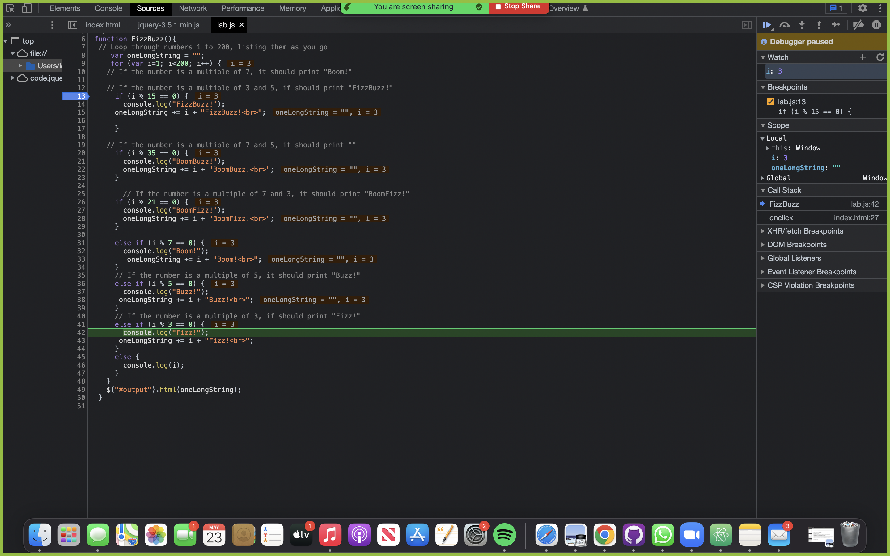
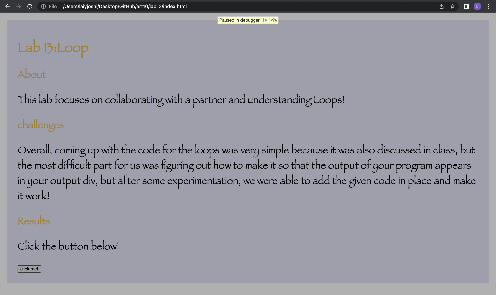

Lab 14:Debugging Tools & Strategies
About
This lab is about checking that all previous experiments operate and how to debug using developer tools!
challenges
This lab would be easy for me to complete! All of my labs are working as well.
Task X
To construct the breakpoints, I experimented in debugging. I launched the debugger with control, shift i, and then opened my Javascript file . Then I inserted the breakpoint, which the blue arrow allows me to halt executing and analyze the JavaScript logic in my code. As you can see in the image, i was = 3 and the logic was that because it is divisible by 3, it should print inside the logic bracket, which it did, which is how I know the code works! In this same manner, you can run through all the numbers assigned to check if it's working
 